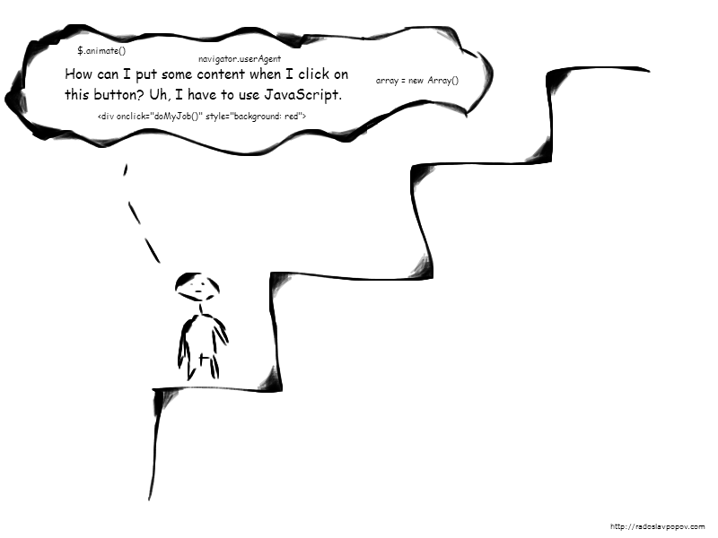
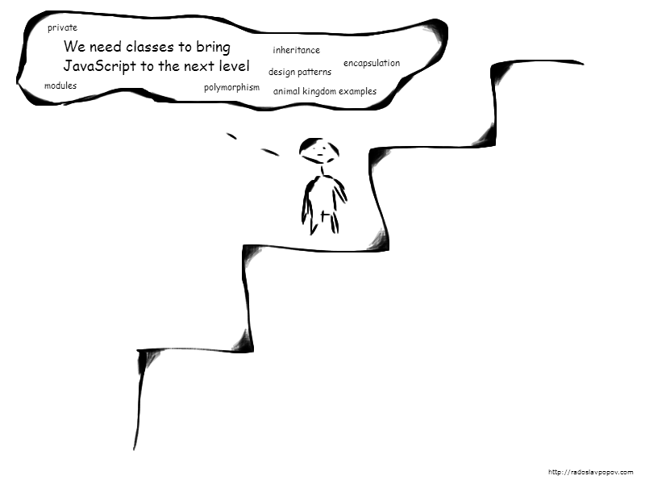
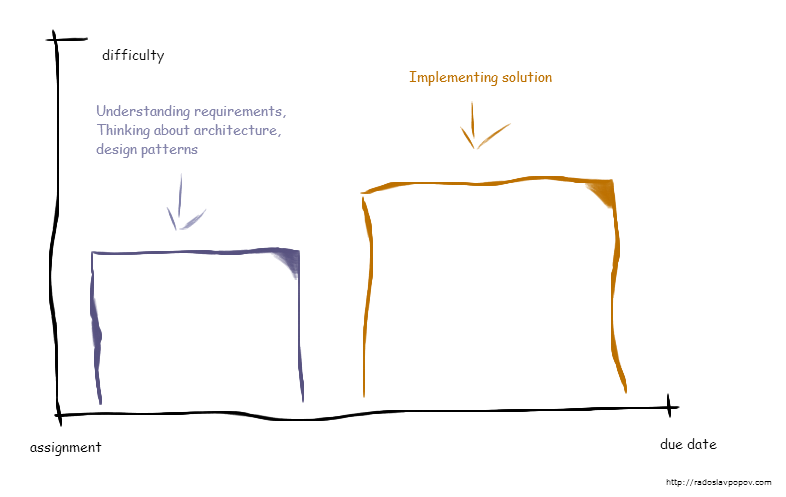
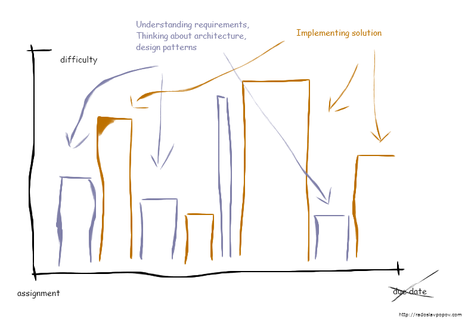
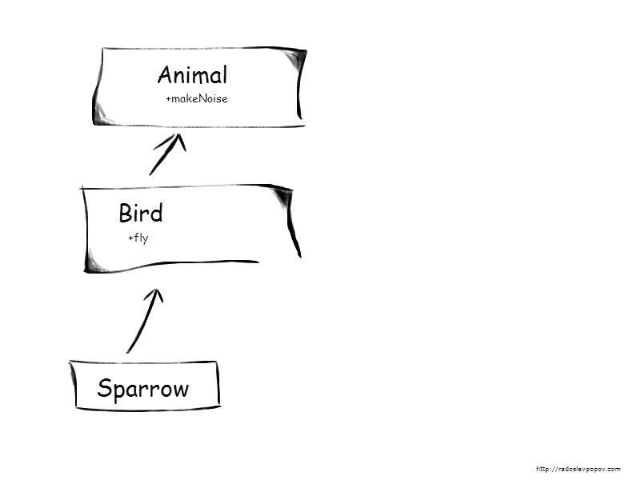
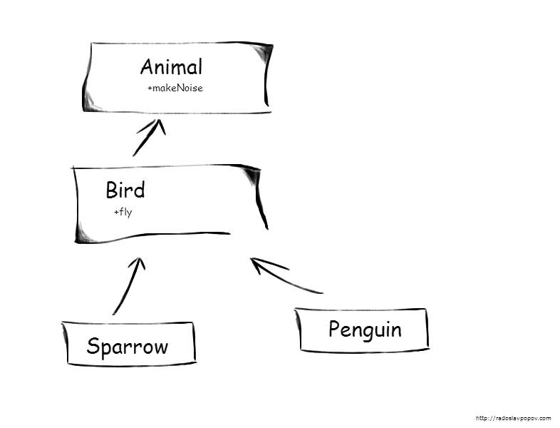
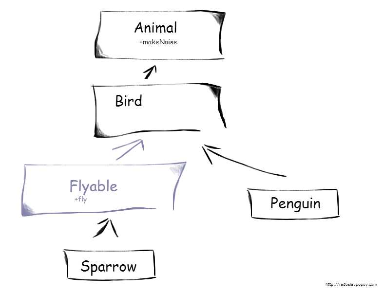

Using NotMyClass.js to Climb the JavaScript Knowledge Staircase
You go to work, follow processes, implement patterns, think about architectures, get the job done, communicate better, become an expert, get respected, get promoted, change job for more money, and use newer and modern technology stack - but are you smarter with the way you write your code?
I was recently interviewed for a position for a JavaScript developer in a very interesting company. At the end of our second meeting, when we discussed the frameworks and libraries the company uses, they mentioned my.class.js. Not even a library
, the boss said, more or less a single file helping us organize our code
.
This was a showstopper for me. I've always liked JavaScript, and I think I am also going to like it in the future. One thing that makes JavaScript so fascinating, however, is that different people have different visions about the way it is best to write it. I have my own, my.class.js has another one, and certainly both don't go along together. Explaining the reasons behind my decisions and the roots of my different vision, however, was not an easy task.
Thinking about my own experience with JavaScript and the way I was improving over the years, I see that I was following a random approach, relying mainly on intuition. But I also realize that my experience is a bit unique, in terms that before moving to full-time JavaScript development, I studied C++ in the university for two years, I worked with Java for a couple more afterwards, and experimented with C# for a short period of time. Also, meeting a lot of C++, Java and C# developers along the way helped me understood the way people think about and perceive JavaScript and coding in general. But explaining my vision on JavaScript coding to all these developers with different background was no easier either. So I decided to consolidate all my visions into a single framework - something I can rely on as being the fundamental basics in all our talks about JavaScript in the future. And by the end of this reading I should be able to explain why I decided to avoid working in a company that uses my.class.js or a similar library.
The Goal
To write better JavaScript.
The JavaScript Knowledge Staircase
Throughout the years I have come to the conclusion that the JavaScript knowledge of every software engineer can be represented on a 3-step staircase like this one:
My rule of thumb is that the further we climb the stairs, the better JavaScript professionals we are, although there may be some very rare exceptions.
Very rarely, however, we are standing on the floor like the guy you see above. This guy has not yet started to climb the JavaScript knowledge staircase, which means he doesn't know JavaScript, and he doesn't have any idea what one can use it for. Also, he has never heard about or experienced any technology or platform surrounding JavaScript - like HTML or web in general, and he doesn't have any opinion or impressions on them.
In a world dominated by web applications, with more and more mobile applications written with web technologies, and with node.js making its strong way to the enterprise, being so ignorant to JavaScript is close to impossible.
Today, JavaScript is so ubiquitous that people do not need to have any experience with it to form a strong opinion. We love it or hate it based on our previous experience with other technologies, our desirability to work in web environment, our preferences toward strictly typed or dynamic languages, the impression from our collaboration with JavaScript developers, and our belief about what the language is really all about.
So having in mind that every one of us is situated on one of the three steps on the JavaScript knowledge staircase, let's see what it is like to be on each of them, starting with the first one.
Step 1: Living in a Document
Step 1 is the lowest step, and it is often the default place to be when we talk about JavaScript. On this step JavaScript is not even perceived as a programming language, but rather as something that must be used to make pages more interactive. On this step, we don't even make a clear difference between different web technologies - being HTML, CSS, JavaScript, or HTML5, because we are not really interested in making such a difference.
This explains why we don't have any problem writing code like this:
<div onclick="myFunction">On this step, we may know about a different mechanizm for attaching an event handler, but we certainly don't know the benefits of using another one. The choice of a library - usually jQuery, leads to some better practices, but still the idea of encapsulation cannot be found here. On this step, JavaScript is all about global functions. On this step, it is all about getting that element by id in order to change the DOM. On this step, we don't care how our code looks like, as long as we do our job as quickly as possible. We may end up using code from w3schools, but who cares anyway if it works?
In a typical project created by a team of Step 1 developers there is usually a single JavaScript file containing all the functions necessary for the proper execution of the project, defined in the global space. Since this is the most defining features of the Step 1, I need to repeat it once again - encapsulation cannot be found on this step. And code reuse is often not possible, although we can have some basic code reuse when using global functions if the codebase is not too big.
There are two reasons we might be on Step 1:
-
I found that most of us are on Step 1 not because we are poor software engineers in general, but because we are forced to write JavaScript against our will. JavaScript is the world's most misunderstood programming language mainly because people with different background (being Java, C#, or PHP for example) need to write JavaScript at some point. Out boss can make us write JavaScript, or we may have personal web-related projects.
The problem of switching to JavaScript from another programming language is similar to switching to any other language. People like to complain. We hate changes. We protect our knowledge.
C++ developers switching to Java or C# complain about speed and lack of pointer functionality. Java and C# developers switching to C++ complain about lack of memory management. C++ developers switching to C complain about lack of OOP. Ruby and Python can be too dynamic for all developers using strictly typed languages. The list goes on and on. The point is... we don't like switching. And we complain when that happens.
So how is switching to JavaScript any different then? Four reasons:
-
JavaScript is way too different than all other popular languages (lisp is not popular, so it doesn't count). While C++, C# and Java guys like to talk how different these three languages are between each other, the truth is that they are identical when we see them on a high-level perspective. Having multiple or single inheritance, having pointer arithmetic or not, having memory management or not, having interfaces or fully abstract classes do not change the high-level concepts like using private fields for encapsulation, using abstract types for polymorphism, using classes to create objects, preferring aggregation over class inheritance being a good practice, etc. JavaScript is different even when it comes to the high-level concepts.
-
Despite being so different that the rest, JavaScript looks very similar to the C-like group of languages at first glance, with its support for procedural programming. This is very deceiving for us, because when we hit the first similarities, false expectations are created that we will find even more similarities and opportunities to reuse our knowledge as we advance. When reality does not match expectations, we couldn't care less to learn why all the differences exist.
-
Some of us just don't like doing web. We don't want any part of it, assuming the technologies and challenges are not on our level. We automatically project this perception from the platform to the programming language of the platform.
-
JavaScript is way too popular than any other language. Switching to JavaScript happens way too often and happens to way too many people. So complains become way too vocal.
The bottom line is that switching to JavaScript is much harder than switching to a "more similar" language. On Step 1, we are experienced software engineers who care about encapsulation, building quality and reusable code, and follow design patterns, only when we write code on our favourite language. We just don't care about that stuff when it comes to JavaScript.
-
-
I also found that some of us may be on Step 1 because of our UX/UI design background. Many designers evolve into "HTML coders" to see their wireframes live. Some JavaScript is often involved in the process. The people in this group are not of particular interest to me and I am going to skip including them in this reading. They have the beginners' attitude and do not expect JavaScript to be like other languages, which is usually enough to climb further the knowledge staircase.
The good news is that moving away from Step 1 requires nothing more than determination. All we need to do is abandon the old attitudes towards the web platform in general or desire to see JavaScript as a programming language worth learning.
Step 2: Advancing to well-established practices
Fortunately, we sometimes move to Step 2. Step 2 is where we have some control over the way we write code and a lot of desire to do it better.
On Step 2 we have started learning JavaScript as a programming language. On Step 2, we already have some years of experience coding on a big JavaScript codebase and most certainly have some experience with other technologies.
Before going any further, let me stop for a moment and tell you my story. Let me tell you how I reached this step.
I've always knew that there is something more to be found in JavaScript than simply querying for elements and applying styles. However, during the "MVC frameworks boom" in 2008-2012 I read some articles about implementing classes, OOP and inheritance in JavaScript. It wasn't easy. In fact, it looked hacky, which I think is why I liked it so much in the first place and experimented with the language in details.
I even created a 67-slide presentation, summarizing all concepts, with a lot of examples about implementing classes and all class-related concepts. I am now going to present to you these examples, written in 2011. Most of them are boring, but the good news is that you don't need to understand them in order to understand the point I am trying to make in reflecting on the code.
The Code
The following is a class with a public instance method and a public static methods:
var Book = function(isbn, title, author) {
this.isbn = isbn;
this.title = title || 'No title specified';
this.author = author || 'No author specified';
};
// public instance method
Book.prototype.display = function() { ... };
// public static method
Book.convertToTitleCase = function(string) { ... };
// instance of the class
var jsPatterns = new Book('9781590599082',
'Pro JavaScript Design Patterns', ['Dustin Diaz', 'Ross Harmes']);
jsPatterns.display();And this is a class with a private instance members:
var Book = function(isbn, title, author) {
// private attributes
var isbn, title, author;
// private method
function checkIsbn(isbn) { ... }
// public privileged method
this.setTitle = function(newTitle) {
title = newTitle || 'No title specified';
};
};
// public non-privileged method
Book.prototype.display = function() { ... };And a class with a private static members:
var Book = (function() {
// private static attribute
var instances = 0;
// class constructor
return function() {
instances++;
}
})();
var book1 = new Book(); // Book.instances == 1
var book2 = new Book(); // Book.instances == 2Let's continue with a class with a private static and a public static method:
var Book = (function() {
// private static method
function checkISBN(isbn) { ... }
// class constructor
return function(isbn) {
checkISBN(isbn);
...
}
})();
// public static method
Book.convertToTitleCase = function(string) { ... }Next, we combine all we know about static and instance members to create one working example:
var Book = (function() {
// private static method
function checkISBN(isbn) { ... }
// class constructor + instance members
return function(isbn) {
// constructor code
checkISBN(isbn);
// private method
var isbnToCountry = function() { ... }
// public privileged method
this.getCountry = function() { ... }
}
})();Next, a singleton class:
var multipleEdit = function() {
var CHECKBOX_CONTAINER_ID = 'params';
var checkboxes;
function initCheckboxes() { ... };
function attachClickEvents() { ... };
return {
install: function() { ... };
selectRecord: function() { ... };
}
}return statement) is pretty amazing, or ugly, depending on one's preferences.
Next, a singleton with lazy loading:
var Singleton = (function() {
var instance;
function constructor() {
// All of the normal singleton code
}
return {
getInstance: function() {
if (!instance) {
instance = constructor();
}
return instance;
}
}
})();All of the examples are of course pointless if we do not reach the holy grail - class inheritance!
function Person(name) {
this.name = name;
}
Person.prototype.getName = function() {
return this.name;
}
function Author(name, books) {
Person.call(this, name);
this.books = books;
}
Author.prototype = new Person();
Author.prototype.constructor = Author;
Author.prototype.getBooks = function() {
return this.books;
};
(new Author('Dustin Diaz',
['JavaScript Design Patterns'])).getName();Author.prototype = new Person(); was a bit too weird even for a guy so immersed into hacking with JavaScript and proving that it supports OOP. By that time I didn't really understand why we create an instance (new Person()) and assign it to the Author.prototype. This is class inheritance after all, aren't we supposed to do it with classes? I mean, Author.prototype = Person; is way more logical syntax. I didn't get it. It frustrated me a bit. So I decided to create another example that hides these technicalities behind a beautiful extends function:
Function.prototype.extends = function(superClass) {
var temp = function() {};
temp.prototype = superClass.prototype;
this.prototype = new temp();
this.prototype.constructor = this;
this.superClass = superClass;
}
function Author(name, books) {
Author.superClass.call(this, name);
this.books = books;
}
// The holy grail!
Author.extends(Person);That's all! Classes, private and static members and inheritance. Full-blown OOP! What else do you possibly want?
Reflecting on the code
Now, how do you think I proceeded when I needed a specific implementation? I just opened the presentation with the examples and I copied the specific structure. And I continued to do this for years, without deep understanding of how certain things work.
If you think that this is a hard thing to do, you are right. More or less, this is what being on Step 2 is. On Step 2, we are more often than not experienced software engineers, who try to use the well-known concept of classes when writing JavaScript. However, one can also find themselves on Step 2 without previous programming experience. By simply reading articles describing the class inheritance in JavaScript without reading about alternative usages of JavaScript, the beginner's mind can be altered to think in that direction.
Step 2 is not always a bad place to find ourselves, though. It provides the ability to build somewhat high-quality and reusable code. It provides encapsulation, thus allowing us to build components (although encapsulation is an important concept outside of component-driven development). While on Step 1 we are not able to scale our codebase to a large application, being on Step 2 comes with some practices that help us scale indefinitely.
Step 2 is sometimes a great place to be from a business point of view. Having a couple of classical software engineers reuse their skills to build complex JavaScript apps is probably the fastest, safest and the most future proof way to build it. Forcing the same engineers to learn and write core JavaScript may not result in a positive outcome.
You do not have to use the examples above to find yourself on Step 2. You can use one of the languages that compiles to JavaScript that support the same concepts.
You can use TypeScript.
Or you can use libraries that provide class-like syntax, like my.class.js. Let's see how my.class.js uses class inheritance:
(function() {
var Person = my.Class({
STATIC: {
AGE_OF_MAJORITY: 18
},
constructor: function(name, age) {
this.name = name;
this.age = age;
},
sayHello: function() {
console.log('Hello from ' + this.name + '!');
}
});
myLib.Person = Person;
})();
(function() {
//Dreamer extends Person
var Dreamer = my.Class(Person, {
constructor: function(name, age, dream) {
Dreamer.Super.call(this, name, age);
this.dream = dream;
},
sayHello: function() {
superSayHello.call(this);
console.log('I dream of ' + this.dream + '!');
},
wakeUp: function() {
console.log('Wake up!');
}
});
var superSayHello = Dreamer.Super.prototype.sayHello;
myLib.Dreamer = Dreamer;
})();
This is a bit different as a syntax compared to my examples, but the concept is the same. The example even demonstrates calling a super method - a must-have feature for any OOP language. Also, using a library like that frees our mind of deciding which one of the many structures out there to use - we simply follow the library API. And that brings consistency to our codebase.
There are a couple of problems associated with being on Step 2, however:
-
Not understanding how things work behind the scene. On Step 2, we can rarely explain why
Author.prototype = new Person();, or the library we use, really works. Thinking in terms of classes (an external concept for the language) prevents us of understanding the core JavaScript functionality. This may be fine if we prefer the speed of development that reusing our knowledge can bring. However, we sometimes want to understand the technical details to improve ourselves as professionals. -
Sometimes, it is plain ugly to implement all class-related features in JavaScript. Let's see how my.class.js handles protected methods, for example:
We need to insert this extra piece of code to every protected method we need to implement. Uglier compared to using thevar Person = my.Class({ constructor: function(name) { this.name = name; }, //this method can only be called by instances of class Person //or instances of class descending from Person protectedMethod: function() { if (!(this instanceof Person)) throw new Error('Access restricted, you are in a protected area!'); //do what you wanna do here //... } });protectedkeyword in other languages, don't you think?The examples shown so far all demonstrate the ugly and more error-prone nature of emulating class-related concepts in JavaScript compared to what other languages support natively. Just to mention a few:
-
Declaring a class is uglier compared to just using the
classkeyword:var Person = my.Class({ }); -
Calling a super method/constructor is uglier compared to just using
super():Dreamer.Super.call(this); -
And wrapping a class definition inside a self-invoking function in order to define a private method is not pretty from classical point of view either, because classes, not functions, should be the smallest, fundamental building blocks of the language.
-
-
We don't take advantage of the language true power. Once we establish our "class framework", we stop using the language real features. We leave to the framework to use the prototype chain, but we don't want any of it, because it does not fit the class-based vision we follow. Unless our framework allows it, we avoid using simple object literals, simple constructor functions, self-invoking functions, the function context, and functional programming in general, where JavaScript excels at.
-
The
thiskeyword still works differently in JavaScript compared to Java, C# and C++, no matter how close we bring JavaScript to the class-based languages. On Step 2, we never stop complaining thatthisin JavaScript is broken, so we avoid it altogether, often with code like that:var self = this; -
Prototype-based OOP + functional programming may turn out to be more powerful than traditional strong-typed class-based OOP. More on that later.
EcmaScript 6 classes are also a Step 2 way of building JavaScript applications. It hides the "ugly" part of the syntax. However, the fact that they are built on top of closures and constructor functions means that they simply do not provide more functionality than what already exists in the language. So the real question is - do classes in EcmaScript 6 help the language evolve in a positive direction and allow us to write better code? JavaScript guru and author of "JavaScript - the Good Parts" Douglas Crockford provides the answer for us:
There are few [features in EcmaScript 6] we know are going to be bad. The worst is class. Class was the most requested new feature in JavaScript, and all of the requests came from Java programmers, who have to program in JavaScript and don't want to have to learn how to do that.
https://youtu.be/PSGEjv3Tqo0?t=297
Due to business situations, unwillingness to challenge the status quo, personal defense biases, or lack of information, we often prefer the comfort zone of Step 2. However, a couple of reasons can motivate us to step even further. This may be our desire to understand how all these libraries we talk about are implemented on a technical level. Or we may be attracted by the simplicity and freedom that the core JavaScript provides in contrast to the conformism and verbosity of the classical languages. Or we may just want to be better professionals. So with these reasons in mind, let's see the world from the top of our staircase.
Step 3: Embracing the True Power of JavaScript
Step 3 is all about using the best of JavaScript to create a high-quality codebase. In Step 3, we know that:
- We can create objects on the fly, without using a predefined structure to instantiate them from.
- However, if we still need to use a predefined structure to create objects, we can do it. But doing it every time just for the sake of consistency is a bad practice.
- Modularization, code reuse, encapsulation, and abstraction - all of these are absolute requirements to achieve a high-quality codebase. And everything we need is the two basic building blocks of the language - objects and functions.

That's it! It is not complicated. In the same time you may wonder why it is so hard to be on Step 3 if all you need to know is these 3 simple points. Is it too hard, from a technical point of view, to implement them? No. It is simple. It is way more simpler than the classical approach. What exactly is then the problem?
During my career I have met a lot of C++, Java, and C# programmers and I have found that the problem is not technical, but rather psychological. Classes are the fundamental concept of OOP established throughout the years in hundreds of books about OOP languages. For a very long time classes were the fundamental mean to achieve abstraction, encapsulation, modularization and code reuse. Admitting, and even thinking about the possibility, that there is somehow a better mechanizm to achieve all of this is almost impossible for these programmers. The idea that we don't need a class to create an object seems too absurd. All of these books begin with the statement that everything in [your language] is an object
, but the statement is wrong. Classes are not objects. And classical OOP is not about objects as much as it is about classes (so a better name should be COP).
Only the smartest, most determined human beings are willing to throw away all their knowledge and to start learning from the beginning, and even they need solid proofs to begin this process. I don't blame these programmers. It is just the way our psychology works. However, if you have reach this far you are more or less interested in the technical stuff, so let's discuss the issues one by one.
1. Creating objects on the fly
Object literals are fundamental part of the language. We can use it for simple objects like this
var obj = {}On Step 3 we know how the prototype chain works. It is out of the scope of this reading to describe it, because this knowledge can be obtained from more respected sources. The point is, having this knowledge obtained, we realize how much more powerful and simpler object inheritance is compared to class inheritance:
var cavy = Object.create(rodent);Object literals are not without any drawbacks. Everything defined in them becomes publicly accessible. Learning when to use them and when not to is something that comes with experience.
2. Using predefined structures to create objects
On Step 3 we know about constructor functions.
var Book = function(isbn, title, author) {
this.isbn = isbn;
this.title = title || 'No title specified';
this.author = author || 'No author specified';
};
var jsPatterns = new Book('9781590599082',
'Pro JavaScript Design Patterns', ['Dustin Diaz', 'Ross Harmes']);
You may notice that this is exactly the same example as one of the class example we use on Step 2. Sometimes, the Step 2 and the Step 3 way of coding leads to the same code in the first glance. However, there are a couple of important differences:
-
On Step 3, we know that the constructor function is still a function. So we expect it to behave like one. We don't expect it to behave like a class in Java and C#. That helps us realize the
thiskeyword is in fact the function context instead of a reference to some "instance", and we know it changes according to what we want. So we are not afraid of usingbind,callandapplyfrom time to time to change it. -
On Step 3, we know that we can simply augment the context of the constructor function to add more members to the resulting object:
Notice that we do not use the prototype chain here. On Step 2, we ask whether this is an inheritance. On Step 3, we don't care and simply focus on the task in hand, creating a high-quality and minimalistic code in the meantime.function Author() { Person.call(this); } -
On Step 3, we take advantage of the function scope to encapsulate variables and functions.
-
On Step 3, we know how constructor functions work behind the scene, so we may avoid using them and the
newkeyword altogether:var createBook = function(isbn, title, author) { var result = {}; result.isbn = isbn; result.title = title || 'No title specified'; result.author = author || 'No author specified'; return result; }; var jsPatterns = createBook('9781590599082', 'Pro JavaScript Design Patterns', ['Dustin Diaz', 'Ross Harmes']);
There are a lot of patterns out there aiming to provide good ways of creating objects. On Step 3, we don't use all of them because more or less we have some preferences. However, we are aware of most of them.
One such pattern I personally enjoy in particular is the advanced singleton.
var MyController = new function() {
var privateVariable = /* ... */
this.publicMethod = function() { /* ... */ };
/* ... */
}
3. Using objects and functions as the two basic building blocks
We already saw how functions can be used to create objects. However, functions are powerful units by themselves. Declaring a function inside another one and accessing the local variables of the outer function is often referred as closures - one of the best ways to achieve encapsulation in JavaScript.
var sendAjaxRequest = function (url, data) {
var ajaxRequest = new XMLHttpRequest();
ajaxRequest.open(data.method, url);
ajaxRequest.setRequestHeader('Content-Type', data.contentType + '; charset=' + data.encoding);
var onStateChanged = function() {
if (ajaxRequest.readyState == 4) {
if (ajaxRequest.status == 200) {
data.onSuccess(ajaxRequest);
} else {
data.onFailure(ajaxRequest);
}
}
};
ajaxRequest.onreadystatechange = onStateChanged;
ajaxRequest.send(data.postBody);
};
Closures are functions whose inner functions refer to independent (free) variables. In other words, the functions defined in the closure 'remember' the environment in which they were created.
MDN
There is a similar concept in C# called delegates. In C#, however, we use an API to achieve the "remembering" effect. In JavaScript, it is built-in in the language. It works with the simple concept of functions. For this reason I refer to functions in JavaScript as one of the two fundamental building blocks of the language. We don't need anything else to do our job. This is pretty amazing.
We can bring encapsulation in JavaScript one level further. Self-invoking functions are often used to execute a given functionality without leaving anything to the global space.
(function() {
// functionality here, completely hidden
}());
If we get back to the objects again, there are a couple of tricks we use on Step 3. One of them is the powerful built-in reflection. In Java and C# we have to use the specific Reflection API, it is verbose and it is often a bad practice to do it (calling methods by their names is somehow contradictory for a language that supports strong types). In JavaScript, we take advantage of the dynamic nature of the language.
myObject['methodByString']();Adding and removing members dynamically to and from an object is another trick. Using objects as namespaces is yet another one.
var myNamespace = myNamespace || {};
myNamespace.publicObject = /* ... */
Our knowledge of the prototype chain enables us to stop thinking of the complex concept of inheritance. It's all about objects now containing some functions. And since functions (including constructor functions) in JavaScript are in fact objects, all we need to know is where exactly on the prototype chain to define our functions. This knowledge allows us to write, understand, and embrace code like that:
Array.prototype.forEach.call(document.querySelectorAll('div'), function(div) {
console.log(div);
});
Historical and Psychological Perspective
Reading everything up until now, we may be tempted to conclude that the only reason we should avoid classical OOP in JavaScript is the fact that the language is more powerful when it comes to other concepts. However, putting all our engineering knowledge aside, it turns out that prototype-based OOP + functional programming + dynamic typing is more powerful than the traditional strong-typed class-based OOP. Let's examine the historical and psychological perspective on programming.
Aristotle - the father of the modern classical OOP
Aristotle (384-322 BC) has first found the benefit of grouping objects into categories. He spent his entire life grouping different living species into categories and subcategories. His formula goes something like this:
essence = genus + differentiaIn other words, if a species belong to a certain category, in addition to its own properties and features, it has all the properties and features of its category as well as all the properties and features of all parent categories. Thus, if a species is categorized as a bird, then it can fly as all other birds (a feature of the bird category), and has a nervous system as all other animals (a feature of the parent category).
However, even Aristotle himself discovered some problems of his theory. He found about the accidental properties - properties that are typical to a certain category but some members still do not have it. Penguins and ostriches are birds, but they cannot fly. Flying is an accidental property/feature for these "unfortunate" species.

Modern classical OOP is no different, as it has struggled for years with the "accidental properties" problem. Categories in classical languages are represented by classes and interfaces (in C++: abstract base classes with pure virtual methods) and sub-categoring is achieved through inheritance/extending. Before moving to the problem, however, let me tell you what I find good about a category approach in programming.
Languages that use categories are best for learning and for university projects. They teach us to think about the structure of our code beforehand - something we should do later in real life. During my university years I've studied C++ and Java, enrolled different courses for design patterns, and implemented a lot of projects as part of my education. It was easy to use classes, interfaces and design patterns in the university - you have strict requirements and they never change. Then, you throw away your project and your code and move on to bigger and greater things. Learning OOP in university is great - it teaches you to think in advance and to structure your code better.
Life in university looks like that:
However, since then I've learned that real life is a bit different. In real life, business doesn't know what it needs. Modern Agile processes further encourages business not to know what it wants before the project is in the middle of the development phase. Projects and codebases are almost never abandoned. Software engineers are in a constant refactoring mode to keep the architecture clean and to keep up with new requirements. Life in reality looks like that:
However, classical OOP forces software engineers to think about their categorization during the initial state of the project requirements, the point in time when the business has the least quantity of information. Design patterns promise to make code more extendable in the future, but with or without design patterns, it is just not possible to predict the direction business requirements will go.
So a typical project usually goes like this (let's use the well-known animal kingdom as an example):
-
A categorization (architecture) is made in the beginning according to the inital requirements. We implement the Animal, Bird and Sparrow categories. 
-
New requirements soon follow. We now need to implement the Penguin category. The "is-a" relationship forces us to inherit it from the Bird category.  Inheriting Penguin from Bird is very tempting, because it allows us to use instances of a Penguin in every place where an instance of a Bird is required (Liskov substitution principle), like in this place, for example:
public void doSomething(Bird object) { /* ... */ }However, penguins do not fly despite being birds. So "fly" becomes an accidental property for the Penguin category. Users of our codebase can call:
Which we avoid by throwing an error if this happens:new Penguin().fly()
However, it does not change the fact that our interface supports flying of penguins on an API level.// inside the Penguin class public void override fly() { throw new Exception("Functionality not supported"); }You may think that this situation happen only to poor programmers in crappy companies. However, if you are a Java programmer, you most certainly know that
java.util.Stackextendsjava.util.Vectorthat extendsjava.util.List. Therefore a Stack in the Java programming language supports all the functionality of a List, including adding an item in the middle of the collection. Java guru and former Sun employee Joshua Bloch talks about this and other mistakes his team has made in the standard Java library in his excellent book "Effective Java":There are a number of obvious violations of this ["is-a" relationship] principle in the Java platform libraries. For example, a stack is not a vector, so Stack should not extend Vector. Similarly, a property list is not a hash table, so Properties should not extend Hashtable. In both cases, composition would have been preferrable.
Joshua Bloch, Effective JavaHowever, what Joshua Bloch misses here is that even the "is-a" relationship is not stable over time and following it strictly does not always prevent the accidental properties problem.
-
Fortunately, most good classical programmers know how to escape of this situation - by refactoring. Refactoring is a great tool in modern software development, and most IDEs now support a variety of mechanizms for automatic refactoring. What we need to do in our situation is to restructure our categorization to match the new requirements: 
In addition to having to think about a categorization when we know the least about the requirements, this is what I find most unpleasant about the categorization approach:
-
As we build more and more granular interfaces (to the point that every interface provides only one single method), we move away from the real life representation. Which is one of the promises of the classical OOP - to bring real life concepts to programming. Flyable is less related to the real world than Bird, and the same is true for Cloneable, Serializable and Disposable.
-
Refactorings like that happen way too often, because the initial categorization software engineers need to make, usually with limited requirement, cannot stand still. This hurts productivity. The bigger the project is, the harder these kind of refactorings are. At one point - developers compromise quality - due to deadline pressures or other reasons. And just inherit Penguin from a Bird that can fly. Or inherit Stack from List that provides functionality to add an item in the middle of the collection.
-
The process of splitting interfaces forces us to change some client code that now expect the newly defined types.
-
The "prefer aggregation over inheritance" pattern helps in clearing the mess a bit, but does not eliminates the problem completely. At the end it all comes down to high coupling vs low coupling. I know that classical programmers like to think about avoiding high coupling between modules when they build software - this is what I respect them for. However, they fail to see the high coupling on this tiny level:
Animal harry = new Penguin();harry forever attached to all its categories - in this case Penguin and Animal. While animals rarely change type in real world, requirements in software industry change overnight. Harry may need to be of a different species tomorrow, or his type of species may need to be different.
There are many ways we can aim at solving these kind of problems in JavaScript. It all depends on the situation. Duck Typing is one feasible solution. Look at how much more flexible and future proof Harry is when defined like this, for example:
var harry = {};Cognitive view on categorization
During XIX and XX century, the emerging fields of psychology and philosophy gave additional point of view to the categorization approach. Some scientists argued that not everything can be put inside a category. For example, it is difficult to find a feature that is common to all games. A game:
- usually has a number of players, but there are also solo games, as well as games that do not require players at all;
- is usually played for fun, but there are also games that are not funny;
- is usually competitive, but some are cooperative, yet others do not have any goal.
The more we think about the concept of a game, the more we find that it is difficult to say what features a game have. In the same time, when we think about a game, we know what we mean. The same goes for other concepts, like art for example.
The ostrich and penguin example illustrates another problem with categorization. It does not have a concept of better members of a category. Ostriches and penguins may not like it, but they are among the worst members of the bird category, at least according to a study of Barbara Malt and Edward Smith (1984), who interviewed participants and came up with a rating to a 7-point scale for various instances of birds and birdlike animals. They found enormous differences in the typical ratings people has given for them. On this scale, Robin scores 6.89, with Bluebird on the second place with 6.42 and Seagull on the third with 6.26. In this study Penguin scores 2.63. Bat, despite not being a bird at all, scores 1.53.
These ratings may show how imperfect human beings are, but the truth is even small children, when thinking about categories, first learn the best members (like robins) and after reaching a more mature state of mind learn about the atypical members (like penguins). However, even after we grow, we never stop thinking in terms of better members - it is just the way human psychology works.
What prototype theory does better than the category one is that it speaks about typical, not defining properties and features of a given category. This is more natural to the human mind. Flying is a typical feature of birds and better members have it. However, it is perfectly acceptable for a member to lack a typical feature, as it is the case with penguins.
Think about different colors too, if you need more examples. Some members may be better representative of the concept of a "red color". Others may lack the typical characteristics, but may still be included in the same category.
Among other problems with the categorization approach these contemporary psychologists describe are:
-
Lack of universal rules to define a category. Categorization depends on the author's background, mental capabilities and experience.
For example, when adults are given a sorting task on an intelligence test, more intelligent members of the Western culture sorts things hierarchically and according to their "natural" category (birds, vegetables, ect). However, the intelligent members of the Kpelle tribe in Africa sort items functionally (eat with fish, knife with vegetables, etc). Only when asked to sort the way a fool will sort, they perform the "natural" (according to the Western culture) categorization sorting.
-
Categorization is not a mechanical process but it rather requires creative invention and evaluation.
-
A lot of the real-life categories are ad-hoc, temporary made for a particular purpose. An example could be the category "things to buy from the local shop for dinner".
Back to my interview
So let me get back to where we started - my job interview and my.class.js library. While it was hard to explain during the interview exactly why I was not going to accept the job offer, it is much easier now having laid out this knowledge framework. The my.class.js library is a Step 2 way of writing code, and I am a Step 3 kind of programmer. It is simple as that.
However, by looking at the drawing of the JavaScript Knowledge Staircase, some of you may have noticed that there is an addition step after Step 3. But is it really a Step? Is it a real place you can be? Well, I want to know too.
The reason there is something above Step 3 in the drawing, even if we don't know what it is, is that if we decide that, as experts, we have obtained the ultimate knowledge, then we are screwed. Andy Hunt, in his excellent book "Pragmatic Thinking and Learning; Refactor Your Wetware", describes it better than me:
Finally, after all this talk about expertise and becoming more expert, what lies beyond the expert? In an oddly circular way, the most sought-after thing you want to achieve after becoming an expert is...the beginner’s mind.
The professional kiss of death for an expert is to act like one. Once you believe in your own expertness, you close your mind to possibilities. You stop acting on curiosity. You may begin to resist change in your field for fear of losing authority on a subject you’ve spent so long mastering. Your own judgment and views, instead of supporting you, can imprison you.
I’ve seen a lot of this over the years. Folks invest heavily in some language, say, Java, or C++ before it. They get all the certifications; they memorize the fifteen lineal feet of books on the API and related tools. Then some new language comes around that lets them write programs much more concisely and more intuitively, test more thoroughly, achieve greater concurrency more easily, and so on. And they don’t want any part of it. They’ll spend more energy deriding the newcomer than in seriously evaluating it for their needs.
That’s not the kind of expert you want to become.
Instead, always keep a “beginner’s” mind. Ask “what if?” You want to emulate a child’s insatiable curiosity, full of wonder and amazement. [...]
Approach learning without preconceived notions, prior judgment, or a fixed viewpoint. See things exactly as they are—just as a child would.
Wow. This is cool. I wonder how it works? What is it?
Andy Hunt, Pragmatic Thinking and Learning; Refactor Your Wetware
Personally, I don't know if there is life after Step 3. But if I find the answer, I promise to tell you. All you have to do is to leave your email below and wait for my wisdom to come.
And if you want to discuss life after Step 3, you can always contact me.
What can you do now?
Now, enough about the future. Let's talk about what we, as Step 3 software engineers, can do now to help spread the word.
I've created a library that represents all my visions about JavaScript as a programming language - a true Step 3 library. I call it NotMyClass.js.
I urge you to join my not-my-class army. Link to my NotMyClass.js library in your JavaScript application. It's the most lightweight library in the world. It's 0K bytes! It does not contain a single line of code. But it supports everything that you need to build high-quality code. Show that you like powerful OOP, objects and object literals, functions, closures, powerful encapsulation, the function context, prototypes. Embrace the true power of JavaScript and help other people embrace it too. Be part of the generation that will get rid of classes in programming. For good.
May 2016